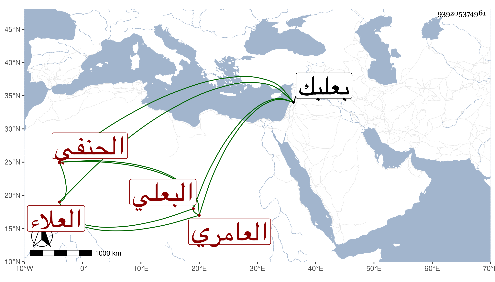

0902Sakhawi.DawLamic.ITO20230111-ara1.EIS1600.939205374961
Biography ID: 939205374961
142
علي بن يوسف بن إسماعيل بن إبراهيم بن علي بن غشم بن محمود بن فهد ابن غشم بن عطاف بن ملك بن غشم العلاء العامري البعلي الحنفي . ولد في جمادى الأولى سنة إحدى وستين وسبعمائة ببعلبك وسمع بها من أحمد بن عبد الكريم البعلي صحيح مسلم أخبرتنا به زينب ابنة عمر بن كندي عن المؤيد وعلى الجمال يوسف بن عمر بن أحمد بن السقا الإصابة في الدعوات المستجابة لأبي الفتح محمد بن الحافظ عبد الغني أنابه أبو حفص عمر بن عبد المنعم بن غدير القواس أذنا عن مؤلفه وحدث سمع منه الفضلاء مات .
